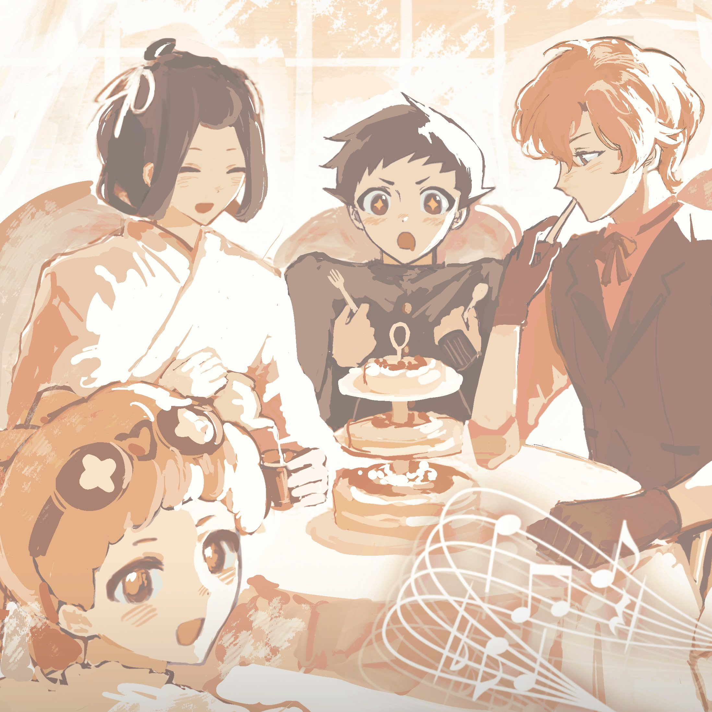

Welcome to 2026 Guangzhou TGAA Tea Party! 欢迎来到2026广州大逆转裁判茶话会！
Good afternoon! Hmm… I believe it must be afternoon by now, must it not? Thank you ever so much for coming all this way! A few days ago, I received a most splendid invitation to a tea gathering from a remarkable host in the East. According to my understanding, it is to be a most extraordinary afternoon tea, where one may enjoy tea and delicious sweets while also taking part in “case deductions,” “debates,” and even an “auction”! Most especially the case deductions—why, I hear there is even a celebrated segment called the “Great Deduction!” How very impressive, dear host! Why, it sounds very much like a little Baker Street 221B in a faraway land! Oh dear—if only I were not so terribly busy with my writing, I should most certainly wish to witness it with my own eyes! If only my typewriter would kindly finish the great detective’s story all by itself!
下午好！唔，应该是下午了吧？大家远道而来辛苦啦～几天前，爱丽丝接到了一位东方的了不起的主办方的茶会邀请，据说是有「案件推理」、「辩论会」、「拍卖」的同时，还可以喝茶吃美味茶点的超级下午茶呢！尤其是案件推理，听说居然还有大名鼎鼎的「名推理」的部分！太厉害了，主办方君～这简直就是异国他乡的贝克街221B呀！可恶，要不是正在赶稿，我一定也要亲眼见证才行！要是打字机可以自己完成大侦探的故事就好了！
In any case, to commemorate this delightful tea gathering, we have prepared a message board where everyone may leave their thoughts. Simply click on the [picture] of [this] page, and you shall find the message board below where you may write your comment! Do please leave your impressions of the tea party! And especially if you enjoyed the experience, do let everyone know whenever you have the chance—it may serve as a sweet delight for us all!
总之，为了纪念这场茶会的召开，我们做了一个留言板来记录大家的感想。点进【这个】版面的【图片】，就可以在下方的留言板内留言了哦！请留下你对这场茶话会的感受吧～尤其是，如果喜欢这次的体验的话，在有机会的时候让大家知道，可以成为所有人的甜味剂哦！
Once again, a warm welcome to you all—dear detective ladies and gentlemen, do have a most wonderful time! 🫖✨
再次欢迎大家前来，侦探姐姐哥哥们一定要玩得开心哦～🫖✨

Come to think of it, the clever among you must surely have noticed that this blog entry is a little different from the usual one! That’s right—there is no need to click any translation button to see Chinese this time, for it appears here already, and even in a Chinese–English side-by-side version! This is because, in order to welcome you all properly, I asked Hurley to learn Chinese especially so that he might help me translate this blog entry. I do wonder how well his studies have gone…
说起来，聪明的大家一定已经发现了这条博s客的不一样之处吧！没错，不用点击翻译成中文也能看见中文——还是中英对照版本呢！这是因为，为了迎接大家，我让福尔摩斯君专门去学了中文来帮我翻译这条博客。不知道他的学习效果怎么样呢？（当然很好了，爱丽丝！）